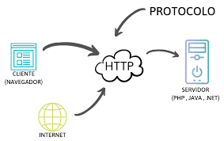
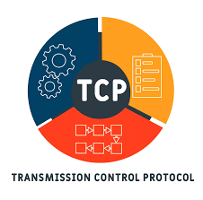
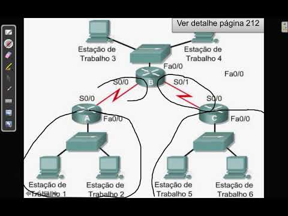
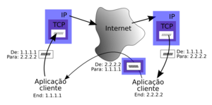
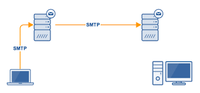
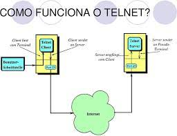
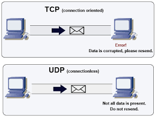

Introduçao a protocolos
Protocolos são uma tecnologia permite a comunicaçao entre computadores,se assemelha a funçao de um tradutor com duas pessoas com idiomas diferentes.
formados por um conjunto de regras que enviam e recebem informaçoes em uma rede e assim possibilitando a comunicaçao entre eles.
existem inumeros protocolos para executar distintas tarefas na rede como (FTP) para enviar arquivos e receber e o ICMP para testar conectividade da rede.
Funçoes dos protocolos
Os protocolos sao as regras que se caracterizam ser mais regidos por topicos que sao:
- Sintaxe:é o padrão de dados e a sequencia que determinam a função do byte a byte,funciona como a gramatica do idioma.
- Semântica:representa um padrão dos dados(sintaxe)para dar um significado a mensagem.
- Timing:Estabelece a velocidade das transmissoes dos pacotes(pedaços de mensagem) ele defini a rapidez e velocidade da comunicaçao.
O protocolo tem funçoes predeterminada para obter a comunicaçao entre os hosts
- Endereçamento:determina qual o destino da mensagem.
- Sequencia e numeração:identifica as mensagens por meio de um numero sequencial
- Estabelecer a conexão:funciona como o canal logico para a comuniçao das mensagen
- Controle de Erros: Identifica e corrigi os erros da comunicaçao:
- Retransmissão:reenvia a mensagem caso ela nao chegue ao destinatario
- Confirmaçao de recebimento:envia a confirmaçao dos pacotes
- Conversão de codigos:faz os ajustes necessarios de acordo com a particularidade do destinatario
A maioria dos hosts de rede nao possuiem a mesma linguagem,se nao houver o protocolo para fazer a tradução nao havera uma comunicaçao cada protocolo é definido por um padrao. existem dois tipos:Facto,sao padroes usados pela comunidade principalmente por fabricantes quando laçam um novo produto,porem nao foram aprovados pela ISO ou ANSI,como protoclo IP.
Jure: São usadas pelos fabricantes quando laçam produtos nao aprovados pelos comites.
Compartilhamento de recursos de rede
Em uma rede de computadores seja local ou global temos a possibilidade de compartilhar recursos entre os hosts conectados a rede,mesmo que nao tenha acesso a internet,como impressoras,arquivos e pastas,etc.
se a rede local esta conectada a internet as possibilidades na rede de computadores aumentam. Compartilhar internet e serviço entre os hosts como fazer video conferencia,envio de videos ,fotos e inumeros arquivos,assim como resolver pendencias do dia-a-dia mais facilmente,tudo isso permitido pois os protocolos fazem a traduçao necessaria para manter essa comunicaçao,e agora veremos os tipos de protocolos existentes
Tipos de protocolos
- ARP:O protocolo ARP, permite encontrar o endereço físico a partir do endereço IP da máquina alvo. Para tal, o protocolo usa um mecanismo de difusão (broadcast) na rede local, enviando uma solicitação a todas as máquinas da rede, sendo que a máquina alvo responde indicando o par endereço IP/endereço físico.
- HTTP:HTTP é um protocolo (protocol) que permite a obtenção de recursos, como documentos HTML. É a base de qualquer troca de dados na Web e um protocolo cliente-servidor, o que significa que as requisições são iniciadas pelo destinatário, geralmente um navegador da Web

- FTP:HTTP é um protocolo (protocol) que permite a obtenção de recursos, como documentos HTML. É a base de qualquer troca de dados na Web e um protocolo cliente-servidor, o que significa que as requisições são iniciadas pelo destinatário, geralmente um navegador da Web
- TCP:O protocolo TCP utiliza:Conexões ponto a ponto e full-duplex entre pares de processos. Apresentação de três vias (three way handshake) como técnica de recuperação de erros. Temporizadores para garantir a entrega dos segmentos na ordem correta.

- ICMP:O ICMP é um protocolo integrante do Protocolo IP, definido pela RFC 792, e utilizado para fornecer relatórios de erros ao host que deu origem aos pacotes enviados na rede. Qualquer computador que utilize o protocolo IP precisa aceitar as mensagens ICMP e alterar o seu comportamento de acordo com o erro relatado.

- IP:Basicamente, o endereço IP é o identificador que permite que as informações sejam enviadas entre dispositivos em uma rede: ele contém as informações de localização e torna o dispositivo acessível para comunicação. A Internet precisa de um meio de distinguir diferentes computadores, roteadores e sites.

- SMTP:A sigla faz referência a Simple Mail Transfer Protocol, ou “Protocolo de transferência de correspondência simples.” Quando comparado com o POP3 ou o IMAP, por exemplo, a principal diferença entre eles e o que é SMTP está, principalmente, na questão de envio/recebimento.

- Telnet:O Telnet é um protocolo que permite iniciar uma sessão e utilizar um computador remoto como se estivesse ligado directamente ao mesmo numa rede local. O sistema (normalmente um PC) que o utilizador tem fisicamente à frente é um cliente de Telnet.

- UDP:O protocolo UDP funciona de forma semelhante ao TCP, mas elimina todo o material de verificação de erros. Toda a comunicação de ida e volta introduz latência, tornando as coisas mais lentas. Quando um aplicativo usa UDP, os pacotes são enviados apenas para o destinatário.

- NNTP:Network News Transfer Protocol é um protocolo da Internet para grupos de discussão da chamada Usenet. Foi definido inicialmente pela RFC 977; 20 anos depois, em Outubro de 2006 a RFC 3977 substituiu e tornou obsoleta a RFC original.